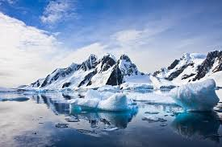
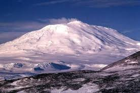
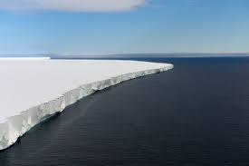

Day 1: Introduction to Antarctica
Welcome to the first day of our Antarctic adventure! Antarctica, the southernmost continent, is a land of extremes. It is the coldest, driest, and windiest continent on Earth. Covered almost entirely by an ice sheet, Antarctica holds about 70% of the world’s fresh water.
Antarctica is not owned by any one country, and its unique status is governed by the Antarctic Treaty, which promotes peaceful scientific exploration and bans military activity on the continent. Let’s begin our journey by exploring some of the most famous landmarks of Antarctica.
Landmarks of Antarctica
South Pole
The South Pole is the most iconic landmark in Antarctica. It is the southernmost point on Earth, and the site is marked by a ceremonial pole surrounded by the flags of the original Antarctic Treaty signatories. The Amundsen-Scott South Pole Station, a U.S. research facility, is located here, and it plays a crucial role in scientific research on climate, astronomy, and glaciology.
Mount Erebus
Mount Erebus is an active volcano located on Ross Island. It is the second-highest volcano in Antarctica and one of the few with a persistent lava lake. The mountain was discovered by Sir James Clark Ross in 1841 and remains a site of interest for volcanologists and geologists.
Ross Ice Shelf
The Ross Ice Shelf is the largest ice shelf in Antarctica, extending over 500,000 square kilometers. It plays a critical role in the stability of the Antarctic ice sheet. Scientists study this area to understand how ice sheets contribute to sea level rise and global climate patterns.
Flags of Antarctic Research Nations
| Country | Flag | Research Station |
|---|---|---|
| USA |  |
McMurdo Station |
| New Zealand |  |
Scott Base |
| UK |  |
Rothera Research Station |
| France Italy |
  |
Concordia Station |
Did you know?
❄️ Did you know that the South Pole has six months of daylight followed by six months of darkness? This phenomenon occurs because of the tilt of the Earth's axis.
üåã Did you know that Mount Erebus is the southernmost active volcano on Earth? It has been continuously erupting since 1972, making it one of the most active volcanoes in the world.
üßä Did you know that the Ross Ice Shelf is about the size of France? It‚Äôs the largest ice shelf in Antarctica, and it‚Äôs crucial for understanding ice dynamics and sea-level rise.
üíß Did you know that Antarctica's ice sheet contains about 60% of the world's freshwater? If it were to melt completely, it could raise global sea levels by about 60 meters (200 feet).
üèîÔ∏è Did you know that Antarctica is the only continent without a native human population? The harsh conditions make it impossible for permanent human settlement.
Conclusion
On this first day, we have explored some of the most significant landmarks in Antarctica. From the South Pole to the Ross Ice Shelf, each site is not only a geographical wonder but also a hub for scientific discovery. Tomorrow, we’ll dive deeper into the diverse and resilient wildlife of this icy continent.